第3章 线性神经网络⚓︎
3.1 线性回归⚓︎
练习3.1.1⚓︎
假设我们有一些数据\(x_1, \ldots, x_n \in \mathbb{R}\)。我们的目标是找到一个常数\(b\)，使得最小化\(\sum_i (x_i - b)^2\)。
- 找到最优值\(b\)的解析解。
- 这个问题及其解与正态分布有什么关系?
解答：
第1问：
首先，最优值的b满足\(\displaystyle \frac{d \sum_i (x_i - b)^2}{d b}=0\) 求b的导数：
接着，可以将左边的式子进行化简：
$$ \begin{aligned} \displaystyle \frac{d \sum_i (x_i - b)^2}{d b}&=2\sum_i (x_i - b)\ &= 2(\sum_i x_i -nb)\ &= 2 n (\bar{x}-b)
\end{aligned} $$ \(\bar{x}\)是\(x_1, \ldots, x_n\)的平均值.因此当且仅当\(b = \bar{x}\)时，\(\sum_i (x_i - b)^2\)最小.
第2问：
假设\(x_1, \ldots, x_n\)是从正态分布中采样得到的，那么\(b = \bar{x}\)是最大似然估计下的均值。也就是说，如果假设数据来自正态分布，并且想要找到一个最好的均值来描述这些数据，那么可以选择样本均值作为估计量。
所以，该问题及其解与\(x_1, \ldots, x_n\)符合正态分布相关。
练习3.1.2⚓︎
推导出使用平方误差的线性回归优化问题的解析解。为了简化问题，可以忽略偏置\(b\)（我们可以通过向\(\mathbf X\)添加所有值为1的一列来做到这一点）。
- 用矩阵和向量表示法写出优化问题（将所有数据视为单个矩阵，将所有目标值视为单个向量）。
- 计算损失对\(w\)的梯度。
- 通过将梯度设为0、求解矩阵方程来找到解析解。
- 什么时候可能比使用随机梯度下降更好？这种方法何时会失效？
解答：
第1问：
对于线性回归问题，损失函数是平方误差。假设我们有一个数据集\(\{(\mathbf x_1, y_1), \ldots, (\mathbf x_n, y_n)\}\)，其中\(\mathbf x_i \in \mathbb R^d\)是输入特征，\(y_i \in \mathbb R\)是标签。我们的目标是找到一组权重向量\(\mathbf w \in \mathbb R^d\)，使得预测值\(\hat{y}_i = \mathbf w^\top\mathbf x_i\)（忽略偏置\(b\)）与真实标签\(y_i\)之间的平方误差最小化。因此，损失函数可以写成以下形式：
其中\(\mathbf X = [\mathbf x_1^\top, \ldots, \mathbf x_n^\top]^\top\)是输入特征的矩阵，\(\mathbf y = [y_1, \ldots, y_n]^\top\)是标签向量。
则线性回归优化问题可以写成： $$ \min_{\mathbf w} \frac{1}{2n} | \mathbf X\mathbf w - \mathbf y |_2^2. $$
第2问：
损失函数对权重向量\(\mathbf w\)的梯度为
其中\(\hat{\mathbf y} = [\hat{y}_1, \ldots, \hat{y}_n]^\top\)是预测值向量。
第3问：
根据题意，将梯度设为0，可得：
其中，\(\hat{\mathbf y}\) 是预测值，\(\mathbf y\) 是真实值，\(\mathbf X\) 是输入数据。将上式变形为：
进一步变形得到：
因为 \(\hat{\mathbf y} = \mathbf X\hat{\mathbf w}\)，所以：
第4问：
当数据集较小时，解析解可能比随机梯度下降更好。然而，在大型数据集上，计算解析解可能会非常耗时，或者存在多个局部最小的情况。此外，当矩阵\(\mathbf X^\top\mathbf X\)不可逆时，解析解不存在。在这种情况下，需要使用正则化或数值优化方法。
练习3.1.3⚓︎
假定控制附加噪声\(\epsilon\)的噪声模型是指数分布。也就是说，\(\displaystyle p(\epsilon) = \frac{1}{2} \exp(-|\epsilon|)\)
- 写出模型\(-\log P(\mathbf y \mid \mathbf X)\)下数据的负对数似然。
- 请试着写出解析解。
- 提出一种随机梯度下降算法来解决这个问题。哪里可能出错？（提示：当我们不断更新参数时，在驻点附近会发生什么情况）请尝试解决这个问题。
解答：
第1问：
根据题意噪声服从指数分布，如下式： $$ y = {\mathbf w}^T {\mathbf x} + b + \epsilon $$ 其中，\(\displaystyle p(\epsilon) = \frac{1}{2} \exp(-|\epsilon|)\)
可得到给定的\(\mathbf x\)观测到特定\(y\)的似然： $$ P(\mathbf y | \mathbf X) = \frac{1}{2} \exp (- |y - {\mathbf w}^T {\mathbf x} - b|) $$
根据极大似然估计法，参数\(\mathbf w\)和\(b\)的最优值是使整个数据集的似然最大的值： $$ \begin{aligned} P(\mathbf y | \mathbf X) &= \prod_{i=1}^n p(y^{(i)} | x^{i}) \ &= \prod_{i=1}^n \left( \frac{1}{2} \exp \left ( - \left |y^{(i)} - {\mathbf w}^T x^{(i)} - b \right | \right) \right) \ &= \left( \frac{1}{2} \right)^n \exp \left( - \sum_{i=1}^n \left | y^{(i)} - {\mathbf w}^T x^{(i)} - b \right | \right) \end{aligned} $$
可得到负对数似然： $$ -\log P(\mathbf y | \mathbf X) = n \log 2 + \sum_{i=1}^n \left | y^{(i)} - {\mathbf w}^T x^{(i)} - b\right | $$
第2问：
根据负对数似然可得到损失函数： $$ L(\mathbf w, b) = n \log 2 + \sum_{i=1}^n \left | y^{(i)} - {\mathbf w}^T x^{(i)} - b\right | $$
由于损失函数是一个绝对值函数，因此该问题没有解析解。
第3问：
根据题意，可使用随机梯度下降（SGD）算法求解，可计算梯度： $$ \nabla_{\mathbf w} L(\mathbf w, b) = - \sum_{i=1}^n x^{(i)} \cdot \text{sgn} (y^{(i)} - {\mathbf w}^T x^{(i)} - b) \ \nabla_{\mathbf b} L(\mathbf w, b) = - \sum_{i=1}^n \text{sgn} (y^{(i)} - {\mathbf w}^T x^{(i)} - b) $$
对于SGD算法，每次迭代使用一个样本，则参数更新为： $$ \begin{array}{ll} \mathbf w \leftarrow \mathbf w + \eta x^{(i)} \cdot \text{sgn} (y^{(i)} - {\mathbf w}^T x^{(i)} - b) \ b \leftarrow b + \eta \cdot \text{sgn} (y^{(i)} - {\mathbf w}^T x^{(i)} - b) \end{array} $$ 其中 \(\eta\) 是学习率。
由于使用了绝对值函数作为损失函数，梯度在接近驻点（即梯度接近零的点）时，梯度不会平滑地趋向于零，而是存在突变。当使用SGD算法，不断更新参数时，可能导致模型无法稳定收敛。
解决该问题的方法： 1. 使用平滑的损失函数，可使用MSE、Smooth L1损失函数等。 2. 调整学习率，逐渐减小学习率，使得在驻点附近的参数更新更加稳定 3. 使用动量法或自适应学习率优化算法
3.2 线性回归的从零开始实现⚓︎
练习3.2.1⚓︎
如果我们将权重初始化为零，会发生什么。算法仍然有效吗？
解答：
如果将权重初始化为零，那么每个神经元的输出都是相同的，这意味着每个神经元学习到的参数也是相同的。因此，每个神经元都会更新相同的参数，最终导致所有神经元学习到相同的特征。因此，权重初始化为零会使算法失效。这样就失去了神经网络的优势，即可以学习到不同特征的能力。
逻辑回归和神经网络有不同的权重初始化方法。对于逻辑回归，可以将权重初始化为零，因为这是一个线性模型，梯度下降算法仍然可以更新它们。然而，对于神经网络来说，将权重初始化为零可能会导致对称性问题，并阻止隐藏单元学习不同的特征。因此，最好使用随机或其他方法来初始化神经网络的权重。
练习3.2.2⚓︎
假设试图为电压和电流的关系建立一个模型。自动微分可以用来学习模型的参数吗?
解答：
根据电压（\(U\)）与电流（\(I\)）的关系，可以构建模型： $$ U = {\mathbf w}^T I + b $$
自动微分（Automatic Differentiation，简称AD）是一种对计算机程序进行高效准确求导的技术。它是介于符号微分和数值微分之间的一种方法，可以计算可导函数在某点处的导数值的计算，是反向传播算法的一般化。
自动微分要解决的核心问题是计算复杂函数，通常是多层复合函数在某一点处的导数、梯度以及Hessian矩阵值 torch中的backward就是自动微分。backward()函数会自动计算所有需要求导的变量的梯度，并将结果存储在相应变量的grad属性中。
根据书中对自动微分的描述：
深度学习框架通过自动计算导数，即自动微分（automatic differentiation）来加快求导。 实际中，根据设计好的模型，系统会构建一个计算图（computational graph）， 来跟踪计算是哪些数据通过哪些操作组合起来产生输出。 自动微分使系统能够随后反向传播梯度。 这里，反向传播（backpropagate）意味着跟踪整个计算图，填充关于每个参数的偏导数。
用代码验证电阻为\(30 \Omega\)的电流与电压的计算公式：
import torch
# 生成数据
x = torch.randn(100, 1)
y = 30 * x
# 定义模型
model = torch.nn.Linear(1, 1)
# 定义损失函数和优化器
criterion = torch.nn.MSELoss()
optimizer = torch.optim.SGD(model.parameters(), lr=0.01)
# 训练模型
for epoch in range(500):
# 前向传播
y_pred = model(x)
# 计算损失
loss = criterion(y_pred, y)
# 反向传播
optimizer.zero_grad()
loss.backward()
optimizer.step()
print(model.weight)
print(model.bias)
Parameter containing:
tensor([[29.9993]], requires_grad=True)
Parameter containing:
tensor([0.0008], requires_grad=True)
练习3.2.3⚓︎
能基于普朗克定律使用光谱能量密度来确定物体的温度吗？
解答：
根据维基百科：
在物理学中，普朗克黑体辐射定律（也简称普朗克定律或黑体辐射定律）是指在任意温度\(\displaystyle T\)下，从一个黑体中发射出的电磁辐射的辐射率与频率之间的关系，在这里，辐射率是频率\(\nu\)的函数： $$ I_{\nu }(\nu ,T)={\frac {2h\nu ^{3}}{c^{2}}}{\frac {1}{e^{\frac {h\nu }{kT}}-1}} $$ 其中，\(I_{\nu}\)是辐射率，\(\nu\)是频率，\(T\)是黑体的温度，\(h\)是普朗克常数，\(c\)是光速，\(k\)是波兹曼常数。
根据电磁波波长和频率的关系为 $$ \lambda = \frac{c}{\nu} $$ 普朗克定律有时写做能量密度频谱的形式： $$ u_{ \nu }(\nu ,T) = \frac{4 \pi}{c} I_{\nu }(\nu ,T) = \frac {8 \pi h \nu^{3}}{c^3} \frac {1}{e^{\frac {h\nu }{kT}} - 1} $$
根据上述公式，可以得到物体的温度计算公式： $$ T = \frac{h \nu}{K \ln \left( 1 + \displaystyle \frac{8 \pi h \nu^3}{c^3 u_{\nu}} \right)} $$
通过测量物体发出的辐射能量密度，并使用普朗克定律，可以确定物体的温度。
练习3.2.4⚓︎
计算二阶导数时可能会遇到什么问题？这些问题可以如何解决？
解答：
计算计算二阶导数时可能会遇到如下问题：
- 数值不稳定性问题：该问题可以通过使用更高精度的数据类型（例如双精度浮点数）或通过使用数值稳定性技巧（例如中心差分）来解决。
中心差分是一种常用的数值稳定性技巧，它可以用于计算函数在某个点处的导数。具体来说，中心差分可以通过以下公式计算：
其中 \(h\) 是一个很小的正数，通常取 \(10^{-6}\) 或更小。
- 一阶导数的计算图保存问题：计算二阶导数，需要将一阶导数的计算图保存起来，使用
create_graph和retain_graph参数
以下面函数举例：
- 原函数：$ y = x^3$
- 一阶导函数：\(y = 3 x^2\)
- 二阶导函数：\(y = 6 x\)
import torch
x = torch.randn((2), requires_grad=True)
y = x ** 3
# 一阶导数
dy = torch.autograd.grad(y, x, grad_outputs=torch.ones(x.shape),
retain_graph=True, create_graph=True)
# 二阶导数
dy2 = torch.autograd.grad(dy, x, grad_outputs=torch.ones(x.shape))
dy[0] == 3 * x**2
tensor([True, True])
dy2[0] == 6 * x
tensor([True, True])
练习3.2.5⚓︎
为什么在squared_loss函数中需要使用reshape函数？
解答：
书中第3.2.5节的代码：
def squared_loss(y_hat, y): #@save
"""均方损失"""
return (y_hat - y.reshape(y_hat.shape)) ** 2 / 2
这里使用reshape函数是为了保证y和y_hat形状相同，避免触发广播机制导致错误的结果。
练习3.2.6⚓︎
尝试使用不同的学习率，观察损失函数值下降的快慢。
解答：
%matplotlib inline
import random
import torch
import numpy as np
from d2l import torch as d2l
# 生成数据集
def synthetic_data(w, b, num_examples): #@save
"""生成y=Xw+b+噪声"""
X = torch.normal(0, 1, (num_examples, len(w)))
y = torch.matmul(X, w) + b
y += torch.normal(0, 0.01, y.shape)
return X, y.reshape((-1, 1))
true_w = torch.tensor([2, -3.4])
true_b = 4.2
features, labels = synthetic_data(true_w, true_b, 1000)
# 读取数据集
def data_iter(batch_size, features, labels):
num_examples = len(features)
indices = list(range(num_examples))
# 这些样本是随机读取的，没有特定的顺序
random.shuffle(indices)
for i in range(0, num_examples, batch_size):
batch_indices = torch.tensor(
indices[i: min(i + batch_size, num_examples)])
yield features[batch_indices], labels[batch_indices]
# 初始化参数
w = torch.normal(0, 0.01, size=(2,1), requires_grad=True)
b = torch.zeros(1, requires_grad=True)
def linreg(X, w, b): #@save
"""线性回归模型"""
return torch.matmul(X, w) + b
def squared_loss(y_hat, y): #@save
"""均方损失"""
return (y_hat - y.reshape(y_hat.shape)) ** 2 / 2
def sgd(params, lr, batch_size): #@save
"""小批量随机梯度下降"""
with torch.no_grad():
for param in params:
param -= lr * param.grad / batch_size
param.grad.zero_()
lrs = [0.5, 0.3, 0.1, 0.01]
num_epochs = 10
net = linreg
loss = squared_loss
batch_size = 10
all_lrs = []
for lr in lrs:
train_lrs = []
for epoch in range(num_epochs):
for X, y in data_iter(batch_size, features, labels):
l = loss(net(X, w, b), y) # X和y的小批量损失
# 因为l形状是(batch_size,1)，而不是一个标量。l中的所有元素被加到一起，
# 并以此计算关于[w,b]的梯度
l.sum().backward()
sgd([w, b], lr, batch_size) # 使用参数的梯度更新参数
with torch.no_grad():
train_l = loss(net(features, w, b), labels)
train_lrs.append(float(train_l.mean()))
all_lrs.append(train_lrs)
epochs = np.arange(1, num_epochs+1)
d2l.plot(epochs, all_lrs, xlabel='epoch num', ylabel='loss',
legend=[f'learn rate {lr}' for lr in lrs],
figsize=(6, 4))
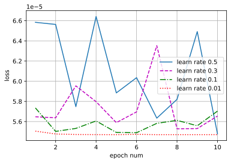
根据上述试验结果，可得到如下结论： 1. 学习率过大前期损失值下降快，但是后面不容易收敛 2. 学习率太小，损失函数下降慢
练习3.2.7⚓︎
如果样本个数不能被批量大小整除，data_iter函数的行为会有什么变化？
解答：
如果样本个数不能被批量大小整除，则在最后一个迭代周期中，最后一批次可能包含少于批量大小个样本。在这种情况下，我们只需忽略该批次中多余的样本即可。例如，1000个总样本，batch_size=3，那么最后1个样本会被舍去。
3.3 线性回归的简洁实现⚓︎
练习3.3.1⚓︎
如果将小批量的总损失替换为小批量损失的平均值，需要如何更改学习率？
解答：
如果将小批量的总损失替换为小批量损失的平均值，则需要将学习率乘以批量大小。这是因为在计算梯度时，我们使用了小批量中所有样本的信息。因此，如果我们将小批量的总损失替换为小批量损失的平均值，则相当于将每个样本的梯度除以批量大小。因此，我们需要将学习率乘以批量大小，以保持相同的更新步长。
练习3.3.2⚓︎
查看深度学习框架文档，它们提供了哪些损失函数和初始化方法？用Huber损失代替原损失，即 $$ l(y,y') = \begin{cases}|y-y'| - \displaystyle \frac{\sigma}{2} & \text{ if } |y-y'| > \sigma \ \displaystyle \frac{1}{2 \sigma} (y-y')^2 & \text{ 其它情况}\end{cases} $$
解答：
通过查看深度学习框架文档，有以下损失函数 （参考链接：https://pytorch.org/docs/2.0/nn.html#loss-functions ） - L1Loss：L1范数损失函数 - MSELoss：平均平方误差损失函数 - CrossEntropyLoss：交叉熵损失函数 - CTCLoss：连接时序分类损失函数 - NLLLoss：负对数似然损失函数 - PoissonNLLLoss：目标值为泊松分布的负对数似然损失函数 - GaussianNLLLoss：目标值为高斯分布的负对数似然损失函数 - KLDivLoss：KL散度损失函数 - BCELoss：二元交叉熵损失函数 - BCEWithLogitsLoss：基于sigmoid的二元交叉熵损失函数 - MarginRankingLoss - HingeEmbeddingLoss - MultiLabelMarginLoss： - HuberLoss：基于Huber的损失函数 - SmoothL1Loss：L1平滑损失函数 - SoftMarginLoss - MultiLabelSoftMarginLoss - CosineEmbeddingLoss - MultiMarginLoss - TripletMarginLoss：三元组损失函数 - TripletMarginWithDistanceLoss
初始化方法有（参考链接：https://pytorch.org/docs/2.0/nn.init.html ）
- calculate_gain(nonlinearity, param=None)：计算对非线性函数增益值
- uniform_(tensor, a=0.0, b=1.0)：生成符合均匀分布的值
- normal_(tensor, mean=0.0, std=1.0)：生成符合正态分布的值
- constant_(tensor, val)：用 val 的值填充输入的张量或变量
- ones_(tensor)：用1来填充张量或变量
- zeros_(tensor)： 用0来填充张量或变量
- eye_(tensor)：用单位矩阵来填充张量或变量
- dirac_(tensor, groups=1)：用 Dirac delta 函数来填充{3, 4, 5}维输入张量或变量
- xavier_uniform_(tensor, gain=1.0)
- xavier_normal_(tensor, gain=1.0)
- kaiming_uniform_(tensor, a=0, mode='fan_in', nonlinearity='leaky_relu')：
- kaiming_normal_(tensor, a=0, mode='fan_in', nonlinearity='leaky_relu')：
- trunc_normal_(tensor, mean=0.0, std=1.0, a=- 2.0, b=2.0)：
- orthogonal_(tensor, gain=1)：
- sparse_(tensor, sparsity, std=0.01)：将 2 维的输入张量或变量当做稀疏矩阵填充，结果张量中的值采样自 N(0,0.01)
import numpy as np
import torch
from torch.utils import data
from d2l import torch as d2l
# 生成数据集
true_w = torch.tensor([2, -3.4])
true_b = 4.2
features, labels = d2l.synthetic_data(true_w, true_b, 1000)
# 读取数据集
def load_array(data_arrays, batch_size, is_train=True): #@save
"""构造一个PyTorch数据迭代器"""
dataset = data.TensorDataset(*data_arrays)
return data.DataLoader(dataset, batch_size, shuffle=is_train)
batch_size = 10
data_iter = load_array((features, labels), batch_size)
# nn是神经网络的缩写
from torch import nn
net = nn.Sequential(nn.Linear(2, 1))
# 使用Huber损失函数
loss = nn.HuberLoss()
trainer = torch.optim.SGD(net.parameters(), lr=0.03)
num_epochs = 3
for epoch in range(num_epochs):
for X, y in data_iter:
l = loss(net(X) ,y)
trainer.zero_grad()
l.backward()
trainer.step()
l = loss(net(features), labels)
print(f'epoch {epoch + 1}, loss {l:f}')
epoch 1, loss 2.478718
epoch 2, loss 0.613343
epoch 3, loss 0.003479
w = net[0].weight.data
print('w的估计误差：', true_w - w.reshape(true_w.shape))
b = net[0].bias.data
print('b的估计误差：', true_b - b)
w的估计误差： tensor([ 0.0115, -0.0647])
b的估计误差： tensor([0.0520])
练习3.3.3⚓︎
如何访问线性回归的梯度？
解答：
要访问线性回归模型的梯度，可以使用自动微分技术。在PyTorch中，可以通过调用backward()方法来计算模型参数相对于损失函数的梯度。然后，可以通过访问模型参数的.grad属性来获取梯度值。
w_grad = net[0].weight.grad
print('w的梯度：', w_grad)
b_grad = net[0].bias.grad
print('b的梯度：', b_grad)
w的梯度： tensor([[-0.0014, 0.0404]])
b的梯度： tensor([-0.0242])
3.4 softmax回归⚓︎
练习3.4.1⚓︎
我们可以更深入地探讨指数族与softmax之间的联系。
- 计算softmax交叉熵损失\(l(\mathbf{y},\hat{\mathbf{y}})\)的二阶导数。
- 计算\(\mathrm{softmax}(\mathbf{o})\)给出的分布方差，并与上面计算的二阶导数匹配。
解答：
第1问：
根据书中第3.4.6.2节
利用 softmax 的定义，我们得到： $$ \begin{aligned} l(\mathbf{y}, \hat{\mathbf{y}}) &= - \sum_{j=1}^q y_j \log \frac{\exp(o_j)}{\sum_{k=1}^q \exp(o_k)} \ &= \sum_{j=1}^q y_j \log \sum_{k=1}^q \exp(o_k) - \sum_{j=1}^q y_j o_j\ &= \log \sum_{k=1}^q \exp(o_k) - \sum_{j=1}^q y_j o_j \end{aligned} $$ 考虑相对于任何未规范化的预测\(o_j\)的导数，我们得到： $$ \partial_{o_j} l(\mathbf{y}, \hat{\mathbf{y}}) = \frac{\exp(o_j)}{\sum_{k=1}^q \exp(o_k)} - y_j = \mathrm{softmax}(\mathbf{o})_j - y_j $$
可计算二阶导数：
其中，\(\mathrm{softmax}(\mathbf{o})\)是由向量\(\mathbf{o}\)的元素通过softmax函数计算得到的概率分布。
第2问：
对于softmax函数\(\mathrm{softmax}(\mathbf{o})\)，其分布方差为：
练习3.4.2⚓︎
假设我们有三个类发生的概率相等，即概率向量是\(\displaystyle (\frac{1}{3}, \frac{1}{3}, \frac{1}{3})\)。
- 如果我们尝试为它设计二进制代码，有什么问题？
- 请设计一个更好的编码。提示：如果我们尝试为两个独立的观察结果编码会发生什么？如果我们为\(n\)个观测值联合编码怎么办？
解答：
第1问：
根据题意，三个类发生的概率都是\(\displaystyle \frac{1}{3}\)，使用二进制代码表示，如果使用两个独立的观察结果进行编码，则需要至少两个比特才能区分三个类别。但是，这意味着平均长度为\(\displaystyle \frac{2}{3}\)比特，而不是最优长度\(\log_2 3 \approx 1.585\)比特。
第2问：
可以使用联合编码来解决这个问题。具体来说，可以将\(n\)个观测值视为一个\(n\)元组，并将其映射到一个整数。例如，如果\(n=2\)，则可以将\((0, 0)\)映射到0、\((0, 1)\)映射到1、\((1, 0)\)映射到2、\((1, 1)\)映射到3。这样做的好处是可以使用\(\lceil \log_2 3 \rceil = 2\)比特来编码三个类别。
对于\(n\)个观测值，使用长度为\(\displaystyle k=\left \lceil \log_2 {n+2 \choose 2} \right \rceil\)的二进制代码来表示\(n\)个观测值的联合分布。
练习3.4.3⚓︎
softmax是对上面介绍的映射的误称（虽然深度学习领域中很多人都使用这个名字）。真正的softmax被定义为 \(\mathrm{RealSoftMax}(a, b) = \log (\exp(a) + \exp(b))\)。
- 证明 \(\mathrm{RealSoftMax}(a, b) > \mathrm{max}(a, b)\)。
- 证明 \(\lambda^{-1} \mathrm{RealSoftMax}(\lambda a, \lambda b) > \mathrm{max}(a, b)\) 成立，前提是\(\lambda > 0\)。
- 证明对于 \(\lambda \to \infty\)，有\(\lambda^{-1} \mathrm{RealSoftMax}(\lambda a, \lambda b) \to \mathrm{max}(a, b)\)。
- softmin会是什么样子？
- 将其扩展到两个以上的数字。
解答：
第1问：
根据题意可知： $$ \mathrm{RealSoftMax} (a, b) = \log (\exp(a) + \exp(b)) $$
根据log函数的性质： $$ \log (\exp(a) + \exp(b)) > \log (\exp(a)) = a \ \log (\exp(a) + \exp(b)) > \log (\exp(b)) = b $$
结合上述两式，可得： $$ \mathrm{RealSoftMax}(a, b) > \max(a,b) $$
第2问：
因此\(\lambda^{-1} \mathrm{RealSoftMax}(\lambda a, \lambda b) > \max(a,b)\)成立，前提是\(\lambda > 0\)。
第3问：
根据题意，令： $$ \begin{aligned} f(a, b, \lambda) &= \lambda^{-1} \mathrm{RealSoftMax}(\lambda a, \lambda b) \ &= \lambda^{-1} \log (\exp(\lambda a) + \exp(\lambda b)) \end{aligned} $$
可知： $$ \begin{aligned} f(a, b, \lambda) &> \lambda^{-1} \log (\exp(\lambda \cdot \max(a, b))) \ &= \log (\exp(\lambda \cdot \max(a, b) \cdot \lambda^{-1} ) ) \ &= \log (\exp \max(a, b) ) \ &= \max (a, b) \end{aligned} $$
又可知： $$ \begin{aligned} f(a, b, \lambda) &< \lambda^{-1} \log (\exp(2 \lambda \cdot \max(a, b))) \ &= \frac{\log 2}{\lambda} + \max(a, b) \end{aligned} $$
当\(\lambda \rightarrow \infty\) 时 $$ \lim_{\lambda \rightarrow \infty} \frac{\log 2}{\lambda} + \max(a, b) = \max(a, b) $$
根据夹逼定理，可得 $$ \lim_{\lambda \rightarrow \infty} f(a, b, \lambda) = \max (a, b) $$
因此对于\(\lambda \to \infty\)，有\(\lambda^{-1}\mathrm{RealSoftMax}(\lambda a,\lambda b) \to \max(a,b)\)。
第4问：
softmin函数是softmax函数的变体，将输入张量的每个元素 \(x_i\) 替换为\(-x_i\)，然后对结果进行归一化。Softmin函数的公式如下：
与softmax函数类似，softmin函数也可以用于多分类问题。不同之处在于，当输入张量中的元素越大时，softmax函数会使输出概率越大，而softmin函数则会使输出概率越小。
第5问：
根据题意，多个数字的RealSoftMax函数表示如下：
3.5 图像分类数据集⚓︎
练习3.5.1⚓︎
减少batch_size（如减少到1）是否会影响读取性能？
解答：
减少batch_size可能会影响读取性能。具体来说，当batch_size减小时，每个小批量的处理时间将增加，从而导致读取性能下降。此外，较小的批量大小可能会导致内存使用率更高。
练习3.5.2⚓︎
数据迭代器的性能非常重要。当前的实现足够快吗？探索各种选择来改进它。
解答：
根据书中第3.5.2节
为了使我们在读取训练集和测试集时更容易，我们使用内置的数据迭代器，而不是从零开始创建。 ```python batch_size = 256
def get_dataloader_workers(): #@save """使用4个进程来读取数据""" return 4
train_iter = data.DataLoader(mnist_train, batch_size, shuffle=True, num_workers=get_dataloader_workers()) ```
书中使用的是PyTorch的DataLoader数据迭代器，数据迭代器的性能对于训练深度学习模型非常重要。当前的实现可能足够快，但是我们可以探索各种选择来改进它。例如，我们可以使用多线程或异步读取来加速数据迭代器。此外，我们还可以使用GPU加速数据预处理和增强。
练习3.5.3⚓︎
查阅框架的在线API文档。还有哪些其他数据集可用？
解答：
通过查阅框架的在线API文档（参考链接：https://pytorch.org/vision/stable/datasets.html#built-in-datasets ），可以得到很多标准数据集，包括图像分类（Image classification）、图像检测或分割（Image detection or segmentation）、光流（Optical Flow）、立体声匹配（Stereo Matching）、图像对（Image pairs）、图片字幕（Image captioning）、视频分类（Video classification）、视频预测（Video prediction）。
例如MNIST、CIFAR-10和ImageNet等。此外，还有许多其他数据集可用于特定领域的任务。
3.6 softmax回归的从零开始实现⚓︎
练习3.6.1⚓︎
本节直接实现了基于数学定义softmax运算的softmax函数。这可能会导致什么问题？提示：尝试计算\(\exp(50)\)的大小。
解答：
根据题意，使用书中实现的softmax函数
def softmax(X):
X_exp = np.exp(X)
partition = X_exp.sum(1, keepdims=True)
return X_exp / partition # 这里应用了广播机制
try:
softmax(np.array([[50]]))
except Exception as e:
print(e)
由于指数函数的值域是 \((0,\infty)\)，因此可能会出现数值上溢的问题。这就是说，由于 \(\exp(50)\) 的结果非常大，它可能超出计算机所能表示的范围，从而被近似为无穷大（inf）。这会带来一些问题，例如在反向传播时可能会出现NaN（不是数字）的情况。解决这个问题的一种常用技巧是，在计算softmax之前，先从所有输入中减去输入中的最大值。这样可以确保指数函数的输入不会太大而导致数值上溢。
练习3.6.2⚓︎
本节中的函数cross_entropy是根据交叉熵损失函数的定义实现的。它可能有什么问题？提示：考虑对数的定义域。
解答：
交叉熵损失函数定义了log函数。当模型预测概率为0时，log函数的值为负无穷。因此，在实际计算时，通常忽略预测概率接近0的样本对损失函数的贡献。这可能会导致模型欠拟合，并且在训练过程中难以收敛。
练习3.6.3⚓︎
请提出一个解决方案来解决上述两个问题。
解答：
解决第一个问题的方法是使用PyTorch框架中实现的softmax方法（torch.nn.functional.softmax），先通过减去输入向量中的元素最大值来缩放softmax运算的输出。解决第二个问题的方法是使用PyTorch框架中实现的交叉熵损失函数（torch.nn.CrossEntropyLoss）。
练习3.6.4⚓︎
返回概率最大的分类标签总是最优解吗？例如，医疗诊断场景下可以这样做吗？
解答：
在某些情况下，返回概率最大的分类标签可能不是最优解。例如，在医疗诊断场景下，我们更关心误诊率和漏诊率等错误类型之间的权衡，并且尽可能避免小概率事件的发生。
练习3.6.5⚓︎
假设我们使用softmax回归来预测下一个单词，可选取的单词数过多可能会带来哪些问题?
解答：
根据题意可知，如果可选取单词数量过多，有以下问题： 1. 单词量过大，会导致计算的复杂度增加 2. 需要计算更多模型参数，并会导致模型复杂度增加 3. 所有的单词所得概率容易接近0，导致难以判断输出结果 4. 在训练期间需要处理更多数据，并且预测时间也会变得更长
3.7 softmax回归的简洁实现⚓︎
练习3.7.1⚓︎
尝试调整超参数，例如批量大小、迭代周期数和学习率，并查看结果。
解答：
import torch
from torch import nn
from d2l import torch as d2l
# PyTorch不会隐式地调整输入的形状。因此，
# 我们在线性层前定义了展平层（flatten），来调整网络输入的形状
net = nn.Sequential(nn.Flatten(), nn.Linear(784, 10))
def init_weights(m):
if type(m) == nn.Linear:
nn.init.normal_(m.weight, std=0.01)
net.apply(init_weights);
# 设置损失函数
loss = nn.CrossEntropyLoss(reduction='none')
# 设置优化器
trainer = torch.optim.SGD(net.parameters(), lr=0.1)
%%time
num_epochs = 10
batch_size = 256
train_iter, test_iter = d2l.load_data_fashion_mnist(batch_size)
d2l.train_ch3(net, train_iter, test_iter, loss, num_epochs, trainer)
CPU times: user 20.3 s, sys: 2.91 s, total: 23.2 s
Wall time: 24.4 s
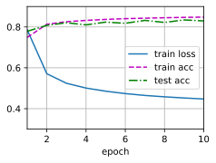
%%time
net.apply(init_weights);
num_epochs = 100
batch_size = 256
train_iter, test_iter = d2l.load_data_fashion_mnist(batch_size)
d2l.train_ch3(net, train_iter, test_iter, loss, num_epochs, trainer)
CPU times: user 3min 15s, sys: 23.7 s, total: 3min 39s
Wall time: 3min 57s
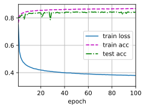
%%time
net.apply(init_weights);
num_epochs = 10
batch_size = 16
train_iter, test_iter = d2l.load_data_fashion_mnist(batch_size)
d2l.train_ch3(net, train_iter, test_iter, loss, num_epochs, trainer)
CPU times: user 4min 31s, sys: 23.4 s, total: 4min 55s
Wall time: 1min 30s
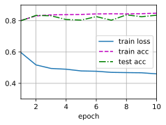
%%time
net.apply(init_weights);
num_epochs = 10
batch_size = 64
train_iter, test_iter = d2l.load_data_fashion_mnist(batch_size)
d2l.train_ch3(net, train_iter, test_iter, loss, num_epochs, trainer)
CPU times: user 1min 20s, sys: 7.19 s, total: 1min 27s
Wall time: 34.7 s
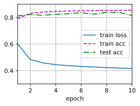
%%time
net.apply(init_weights);
num_epochs = 10
batch_size = 128
train_iter, test_iter = d2l.load_data_fashion_mnist(batch_size)
d2l.train_ch3(net, train_iter, test_iter, loss, num_epochs, trainer)
CPU times: user 45.5 s, sys: 4.53 s, total: 50.1 s
Wall time: 28.4 s
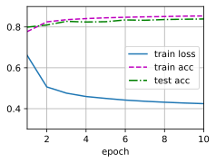
%%time
net.apply(init_weights);
num_epochs = 20
batch_size = 1024
train_iter, test_iter = d2l.load_data_fashion_mnist(batch_size)
d2l.train_ch3(net, train_iter, test_iter, loss, num_epochs, trainer)
CPU times: user 17.7 s, sys: 3.59 s, total: 21.3 s
Wall time: 45.3 s
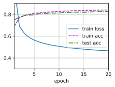
%%time
net.apply(init_weights);
num_epochs = 20
batch_size = 128
train_iter, test_iter = d2l.load_data_fashion_mnist(batch_size)
d2l.train_ch3(net, train_iter, test_iter, loss, num_epochs, trainer)
CPU times: user 1min 29s, sys: 8.07 s, total: 1min 37s
Wall time: 56.1 s
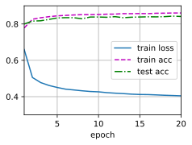
%%time
# 设置损失函数
loss = nn.CrossEntropyLoss(reduction='none')
# 设置优化器
trainer = torch.optim.SGD(net.parameters(), lr=0.1)
net.apply(init_weights);
num_epochs = 10
batch_size = 256
train_iter, test_iter = d2l.load_data_fashion_mnist(batch_size)
d2l.train_ch3(net, train_iter, test_iter, loss, num_epochs, trainer)
CPU times: user 22.1 s, sys: 3.27 s, total: 25.4 s
Wall time: 25 s
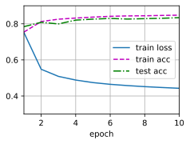
%%time
try:
# 设置损失函数
loss = nn.CrossEntropyLoss(reduction='none')
# 设置优化器
trainer = torch.optim.SGD(net.parameters(), lr=1)
net.apply(init_weights);
num_epochs = 10
batch_size = 256
train_iter, test_iter = d2l.load_data_fashion_mnist(batch_size)
d2l.train_ch3(net, train_iter, test_iter, loss, num_epochs, trainer)
except Exception as e:
print(e)
1.4846071535746257
CPU times: user 22.6 s, sys: 2.88 s, total: 25.5 s
Wall time: 24.8 s
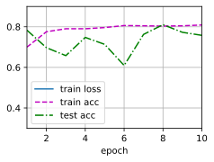
%%time
try:
# 设置损失函数
loss = nn.CrossEntropyLoss(reduction='none')
# 设置优化器
trainer = torch.optim.SGD(net.parameters(), lr=1)
net.apply(init_weights);
num_epochs = 100
batch_size = 256
train_iter, test_iter = d2l.load_data_fashion_mnist(batch_size)
d2l.train_ch3(net, train_iter, test_iter, loss, num_epochs, trainer)
except Exception as e:
print(e)
1.2089558986663818
CPU times: user 3min 38s, sys: 24.7 s, total: 4min 3s
Wall time: 4min 6s
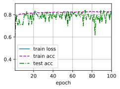
%%time
try:
# 设置损失函数
loss = nn.CrossEntropyLoss(reduction='none')
# 设置优化器
trainer = torch.optim.SGD(net.parameters(), lr=0.01)
net.apply(init_weights);
num_epochs = 10
batch_size = 256
train_iter, test_iter = d2l.load_data_fashion_mnist(batch_size)
d2l.train_ch3(net, train_iter, test_iter, loss, num_epochs, trainer)
except Exception as e:
print(e)
0.6371851430892944
CPU times: user 22.4 s, sys: 3.02 s, total: 25.4 s
Wall time: 24.6 s
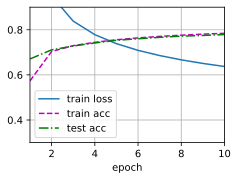
%%time
try:
# 设置损失函数
loss = nn.CrossEntropyLoss(reduction='none')
# 设置优化器
trainer = torch.optim.SGD(net.parameters(), lr=0.001)
net.apply(init_weights);
num_epochs = 10
batch_size = 256
train_iter, test_iter = d2l.load_data_fashion_mnist(batch_size)
d2l.train_ch3(net, train_iter, test_iter, loss, num_epochs, trainer)
except Exception as e:
print(e)
1.0498540501912434
CPU times: user 21.3 s, sys: 2.87 s, total: 24.2 s
Wall time: 24.6 s
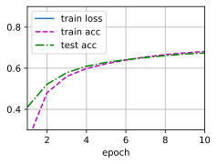
%%time
try:
# 设置损失函数
loss = nn.CrossEntropyLoss(reduction='none')
# 设置优化器
trainer = torch.optim.SGD(net.parameters(), lr=0.001)
net.apply(init_weights);
num_epochs = 100
batch_size = 256
train_iter, test_iter = d2l.load_data_fashion_mnist(batch_size)
d2l.train_ch3(net, train_iter, test_iter, loss, num_epochs, trainer)
except Exception as e:
print(e)
0.6227923411051433
CPU times: user 3min 49s, sys: 25.3 s, total: 4min 14s
Wall time: 4min 10s
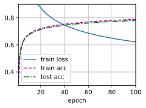
%%time
try:
# 设置损失函数
loss = nn.CrossEntropyLoss(reduction='none')
# 设置优化器
trainer = torch.optim.SGD(net.parameters(), lr=0.0001)
net.apply(init_weights);
num_epochs = 10
batch_size = 256
train_iter, test_iter = d2l.load_data_fashion_mnist(batch_size)
d2l.train_ch3(net, train_iter, test_iter, loss, num_epochs, trainer)
except Exception as e:
print(e)
2.3487269337972005
CPU times: user 21.7 s, sys: 2.75 s, total: 24.5 s
Wall time: 24.3 s
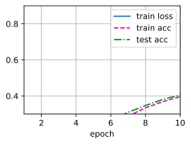
通过实验，我们发现：
1. 学习率越小，收敛越慢，同时可能存在局部收敛的问题，影响训练精度。
2. 轮数越多，一般效果越好，但可能因为训练精度已收敛，会花费不必要的训练时间。
3. batch_size越大，训练时间越短，但是可能会影响训练精度，并且batch_size与机器相关，使用GPU训练时，显存较小可能无法满足大batch_size训练。
练习3.7.2⚓︎
增加轮数，为什么测试精度会在一段时间后降低？我们怎么解决这个问题？
解答：
增加迭代周期的数量可能会导致过拟合，从而导致测试精度下降。具体来说，当我们增加迭代周期的数量时，模型可能会开始学习到一些只能满足训练样本的非共性特征（这些更多是一种偶然性特征，不适用于测试样本），从而导致过拟合。为了解决这个问题，可以使用早停技术或正则化技术。早停技术是指在模型出现过拟合时（测试集表现开始下降）停止训练。正则化技术是指通过向损失函数添加惩罚项来限制模型参数的大小，从而减少过拟合。
创建日期: November 25, 2023